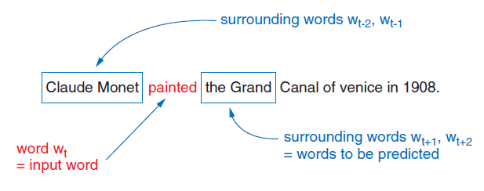
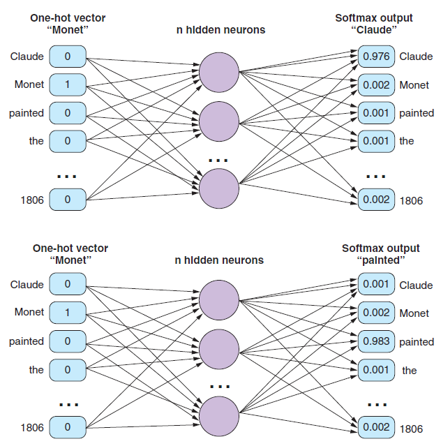

5.4 Word2Vec Skip-gram
Predict the neighbors from the middle word.
These notes walk through the lecture slides. The original deck is unchanged; use (slides) on the course hub if you want that PDF.
1. Word2Vec as a prediction game
Word2Vec takes a large unlabeled corpus and puts every word in one vector space. The space is defined by context: words that show up in the same windows should end up nearby.
The model starts with random vectors. It refines them by playing a supervised game on made-up labels: given a word, what else stood next to it? A two-layer net does the prediction. When training is done, you keep the hidden weights.
Skip-gram is the version of that game that predicts context from the center. CBOW (note 5.3) predicts the center from the context.
Sources: Practical Natural Language Processing and Natural Language Processing in Action.
2. What “skip” means
A skip-gram is an n-gram that is allowed to skip tokens. You predict Claude from painted and skip Monet. The window still bounds how far you look.

One center word produces several training pairs, one per neighbor. That is why skip-gram “sees” more examples than CBOW on the same sentence.
3. Softmax
The output layer is a classifier over the whole vocabulary. Softmax turns raw scores (z) into probabilities that sum to 1:
[ \sigma(z)j = \frac{e^{z_j}}{\sum{k=1}^{K} e^{z_k}} ]
Entry (j) is “probability that word (j) is a neighbor of the input.” During training you compare that distribution to a one-hot of the true neighbor (cross-entropy). At the end of an update you can pretend the argmax is a one-hot prediction; the useful object is still the weight matrices, not those predictions.
A full softmax over a 100,000-word vocabulary is slow. Note 5.5 replaces it with negative sampling.
4. From a sentence to pairs
Window size 2, same sentence as CBOW:
sentence = "Claude Monet painted the Grand Canal of Venice in 1806."
A 5-gram tokenizer puts each word in the center once. For four neighbors you get four updates per center: each neighbor is a separate target.

| Center | Neighbors you predict (window 2) |
|---|---|
| painted | Claude, Monet, the, Grand |
| Canal | the, Grand, of, Venice |
Input is the one-hot of the center (size (|V|)). Hidden layer is size (d). Output is (|V|) softmax units. Four neighbors ⇒ four forward/backward passes with the same input one-hot and four different target one-hots.
After training, each row of the input–hidden weight matrix is a word vector. The softmax head is discarded. Those rows are what you look up at inference.
5. CBOW versus skip-gram, in one table
| CBOW | Skip-gram | |
|---|---|---|
| Direction | context → center | center → context |
| Input | pooled / multi-hot context | one-hot center |
| Examples per window | one | one per neighbor |
| Tends to win on | frequent words, speed | rare words, small corpora |
Both learn the same kind of object: a (d)-dimensional vector per type. Neither models order inside the window. Neither is a language model you ship. They are representation methods.
Count the pairs. Ten tokens and window 2 give about (10 \times 4) skip-gram pairs (edges of the sentence have fewer neighbors). CBOW gives about 10 examples. That factor of ~4 is the “more examples” claim, not a different definition of meaning.
6. Practice
-
For center Monet and window 2, list the skip-gram training pairs from the sentence above.
-
Why does skip-gram produce more gradient updates per sentence than CBOW?
-
Softmax outputs a distribution over (V). After training, do you use that distribution as the embedding? What do you use instead?